Qudits
A qudit is a generalization of a qubit in that it's a quantum state of
finite dimension. Where a qubit's state can be described by a linear combination
of two orthogonal states, a qudit can be described by a linear combination of
\( d \)-many orthogonal states.
Qudit Gates
The most relevant gates for our considerations at the moment are the Quantum Fourier Transform (QFT), the
generalized \(X\) gate, the generalized \(Z\) gate and the idea of a multi-qudit controlled gate.
The general form of the gates are described individually below. Note that the generalized gates can
be applied to aribtrary numbers of qudits, though the \(Z\) and \(X\) gates are generally applied to one qudit
at a time as \(X_d\) and \(Z_d\).
\(X_{d^n}\) Generalized \(X\) Gate
The generalized X gate for \(n\) qudits can be thought of as a cyclic permutation on the basis states. The one qudit generalized
\(X_{d}\) can be seen as an operator that adds one to the basis vector's index, and if it reaches \(d\) for a qu\(d\)it, it returns
that digit of the index to \(0\).
$$
\begin{bmatrix}
0 & 0 & \cdots & 0& 1\\
1 & 0 & \cdots& 0 & 0\\
0 & 1 & \cdots& 0 & 0\\
\vdots & \vdots & \ddots & \vdots&\vdots\\
0 & 0 & \cdots &1&0 \\
\end{bmatrix}
$$
\(Z_{d^n}\) Generalized \(Z\) Gate
The generalized Z gate for \(n\) qudits of dimension \(d\)
assosciates to each basis vector \(\vert k\rangle\)
a phase \(e^{2\pi i k/d^n}=\omega^{k}_{d^n}\). In the complex plane,
it effectively rotates each basis vector \(\vert k\rangle\)'s amplitude
by \(\frac{2\pi k}{d^n}\).
$$
\begin{bmatrix}
1 & 0 & 0 &\cdots & 0\\
0 & \omega_{d^n} & 0&\cdots& 0\\
0 & 0 &\omega_{d^n}^2 & \cdots& 0\\
\vdots & \vdots &\vdots& \ddots & \vdots\\
0 & 0 & 0 & \cdots &\omega_{d^n}^{d^n-1} \\
\end{bmatrix}
$$
\(QFT_{d^n}\) \(n\)-Qu\(d\)it Quantum Fourier Transform
The Quantum Fourier Transform is succintly described as \(QFT_{d^k}^{i,j}=\omega_{d^k}^{i\cdot j}\). This gives the matrix
form:
$$\frac{1}{\sqrt{d^n}}
\begin{bmatrix}
1 & 1 & 1&1 &\cdots & 1\\
1 & \omega_{d^n}^1 & \omega_{d^n}^2&\omega_{d^n}^{3} &\cdots& \omega_{d^n}^{d-1}\\
1 & \omega_{d^n}^2 &\omega_{d^n}^{4} & \omega_{d^n}^{6} &\cdots& \omega_{d^n}^{2\cdot(d-1)}\\
1 & \omega_{d^n}^3 &\omega_{d^n}^{6} &\omega_{d^n}^{9} & \cdots& \omega_{d^n}^{3\cdot(d-1)}\\
\vdots & \vdots &\vdots& \vdots&\ddots & \vdots\\
1 & \omega_{d^n}^{d^n-1} & \omega_{d^n}^{(d^n-1)\cdot 2} & \omega_{d^n}^{(d^n-1)\cdot 3} &\cdots &\omega_{d^n}^{(d^n-1)(d^n-1)} \\
\end{bmatrix}
$$
\(C^{n}G_{d^l}\) Qu\(d\)it Control \(G\)ates
The non-local controlled gates are also very important. They're definitively multi-qudit gates in that thay aren't separable into a tensor product
of single-qudit gates. They're defined as gates that only apply a gate to the \(l\) target qudits when the \(n\) control qudit's have a certain value.
For a one qudit gate \(G_d\) and \(n\) control qudits, the matrix form of the controlled \(G_d\) gate takes the form:
$$
\begin{bmatrix}
\mathbb{I_d} & 0 & 0 &\cdots & 0\\
0& \mathbb{I_d} & 0 &\cdots & 0\\
0& 0 & \mathbb{I_d} &\cdots & 0\\
\vdots&\vdots&\vdots& \ddots & \cdots\\
0& 0 & 0 &\cdots & G_{d^l}\\
\end{bmatrix}
$$
Generalized Grover Diffusion Operator
The GGDO as defined by Samuel Hunt and Maximilien Gadouleau in
Grover’s Algorithm and Many-Valued Quantum Logic is
